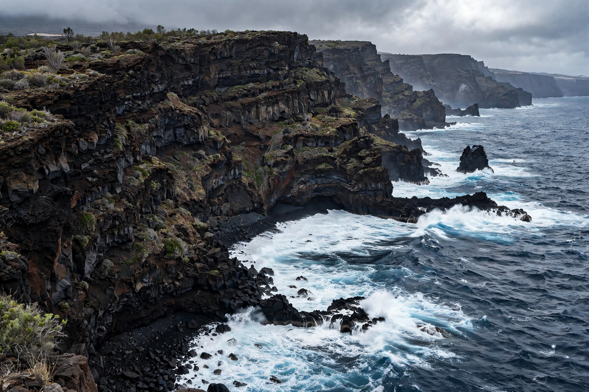

El Hierro (nicknamed Isla del Meridiano, the "Meridian Island") is the smallest, southernmost, and westernmost of the Canary Islands of Spain, in the Atlantic Ocean off the coast of Africa. Its capital is Valverde. The island has an area of about 269 square kilometres and a population of roughly 11,000. Before Christopher Columbus's voyages, El Hierro was considered the westernmost point of the known world, and the Ferro meridian through the island was used as a prime meridian on European maps for centuries.
| El Hierro | |
|---|---|
 | |
| Country | Spain |
| Archipelago | Canary Islands |
| Capital | Valverde |
| Area | 269 km² |
| Highest point | Pico de Malpaso, 1,501 m |
| Population | ~11,000 |
El Hierro is the youngest island of the archipelago, about 1.2 million years old, formed by shield volcanism. It is shaped like a three-sided amphitheatre around the great landslide scar of El Golfo. The island has experienced giant prehistoric landslides, in which entire flanks collapsed into the sea. In 2011–2012 a submarine eruption occurred off the fishing village of La Restinga, the first Canary Islands eruption since 1971, creating a new underwater volcanic cone (later named Tagoro). The whole island is a UNESCO Biosphere Reserve.
The indigenous inhabitants, the Bimbaches, were a Guanche people related to the Berbers of North Africa; their petroglyphs can still be seen at sites such as El Julan. The island was conquered for Castile in the early 15th century by Jean IV de Béthencourt. The legendary Garoé, a sacred laurel tree that condensed fog and supplied drinking water to the Bimbaches, remains a symbol of the island.
El Hierro is famous for the Gorona del Viento project, a wind farm combined with pumped-storage hydroelectricity (using two reservoirs at different elevations) designed to supply the island's electricity entirely from renewables. Since 2014 the system has met a large share of demand and has covered 100% of the island's electricity for extended periods, making El Hierro a global case study in island energy independence.